Methodology
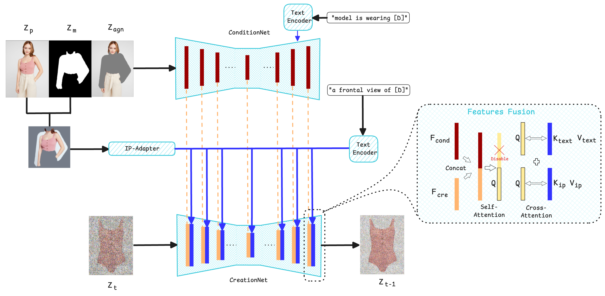
We investigate and optimize the model along three key design axes:
- (i) Generation Backbone: Comparative analysis of modern Stable Diffusion variants adapted for high-resolution canvas reconstruction.
- (ii) Conditioning: Extensive ablations on clothing masks, comparing masked vs. unmasked inputs for spatial image conditioning, and leveraging high-level semantic features.
- (iii) Losses and Training Strategies: Evaluating the impact of auxiliary attention-based losses, perceptual objectives, and a multi-stage curriculum training schedule to steer reconstruction details.
Quantitative Results
Quantitatively evaluated on VITON-HD and DressCode datasets, our framework achieves state-of-the-art performance with a drop of 9.5% on the primary metric DISTS and competitive performance on LPIPS, FID, KID, and SSIM, providing both stronger baselines and insights to guide future Virtual Try-Off research.
| Method | Resolution | SSIM ↑ | LPIPS ↓ | DISTS ↓ | FID ↓ | KID ↓ |
|---|---|---|---|---|---|---|
| TryOffDiff [1] (HD) | 512 × 384 | 75.02 | 28.52 | 22.32 | 24.56 | 9.52 |
| Try-Off-Anyone [2] (HD) | 512 × 384 | 72.35 | 34.08 | 22.11 | 11.57 | 2.01 |
| Ours (HD) | 512 × 384 | 74.70 | 28.75 | 20.10 | 9.73 | 1.82 |
| IGR [3] (HD) | 1024 × 768 | 78.95 | 29.46 | 20.45 | 13.14 | 2.97 |
| Ours (HD) | 1024 × 768 | 76.04 | 31.41 | 19.59 | 10.69 | 2.31 |
| TryOffDiff [1] (DC)☆ | 512 × 384 | 80.8 | 31.6 | 21.6 | 17.1 | 4.7 |
| Ours (DC)☆ | 512 × 384 | 75.53 | 32.61 | 20.85 | 12.30 | 2.12 |
☆ DISTS is computed at 341 × 256 resolution following the TryOffDiff evaluation protocol.
Qualitative Comparison at 512x384 resolution - Studio-condition & In-the-wild Samples
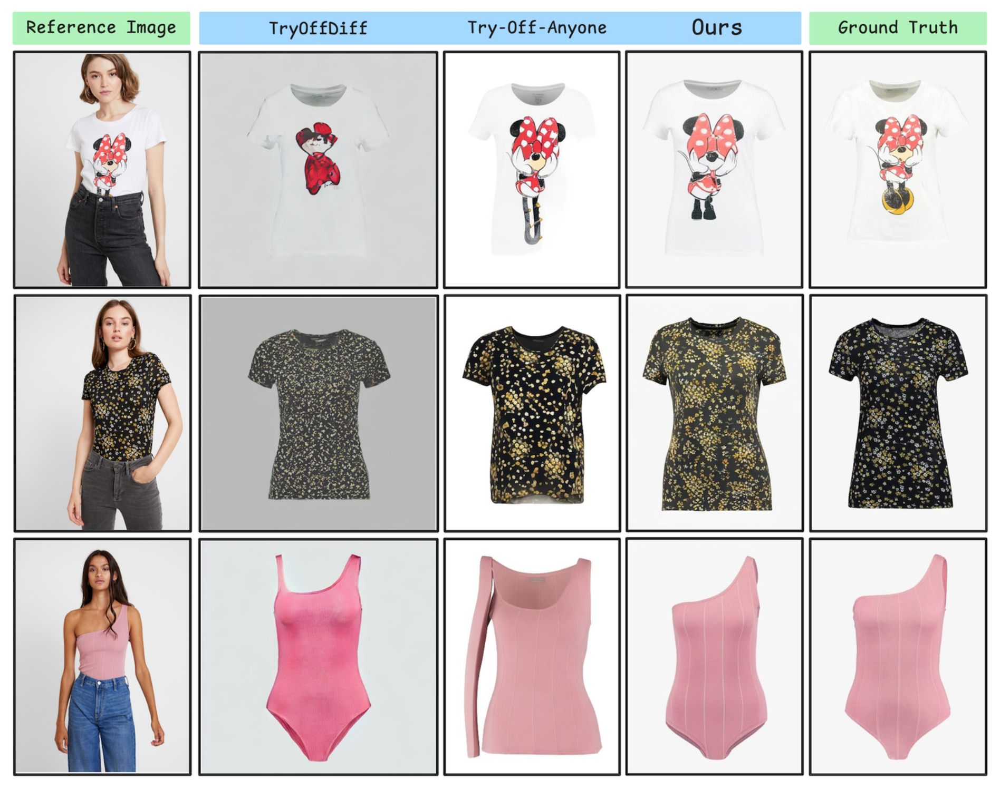
Studio-condition Testing Samples, which the model was trained with.
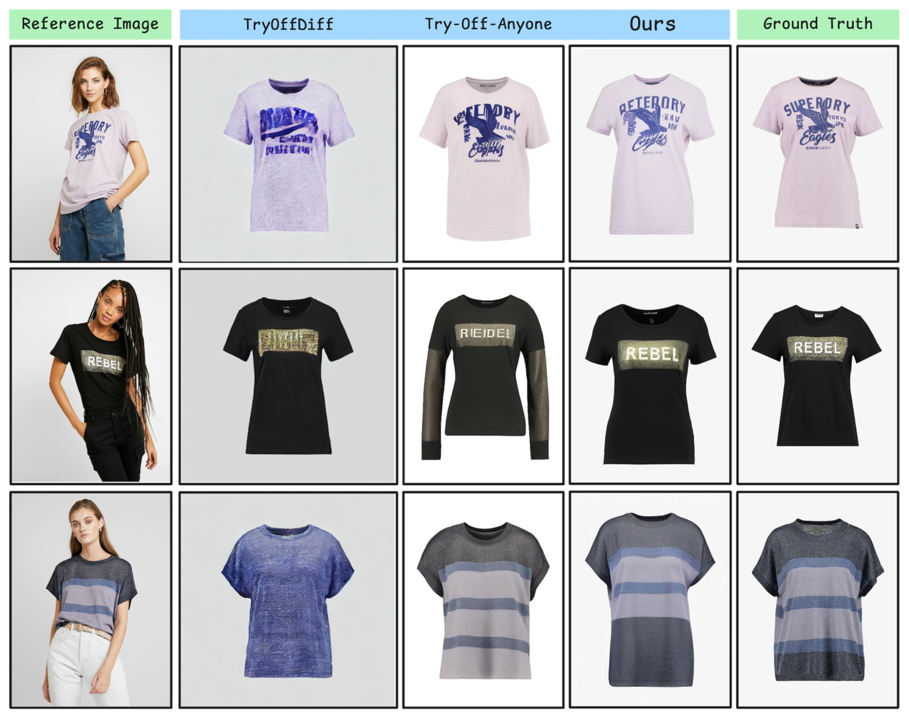
Studio-condition Testing Samples, which the model was trained with.
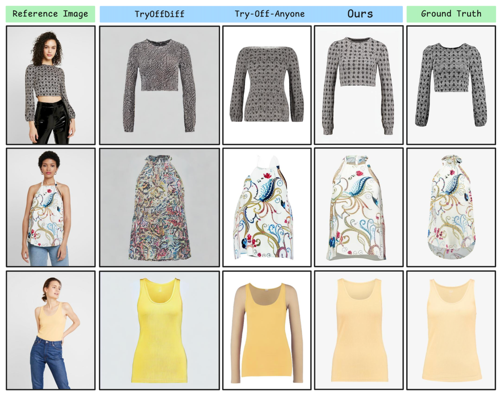
Studio-condition Testing Samples, which the model was trained with.
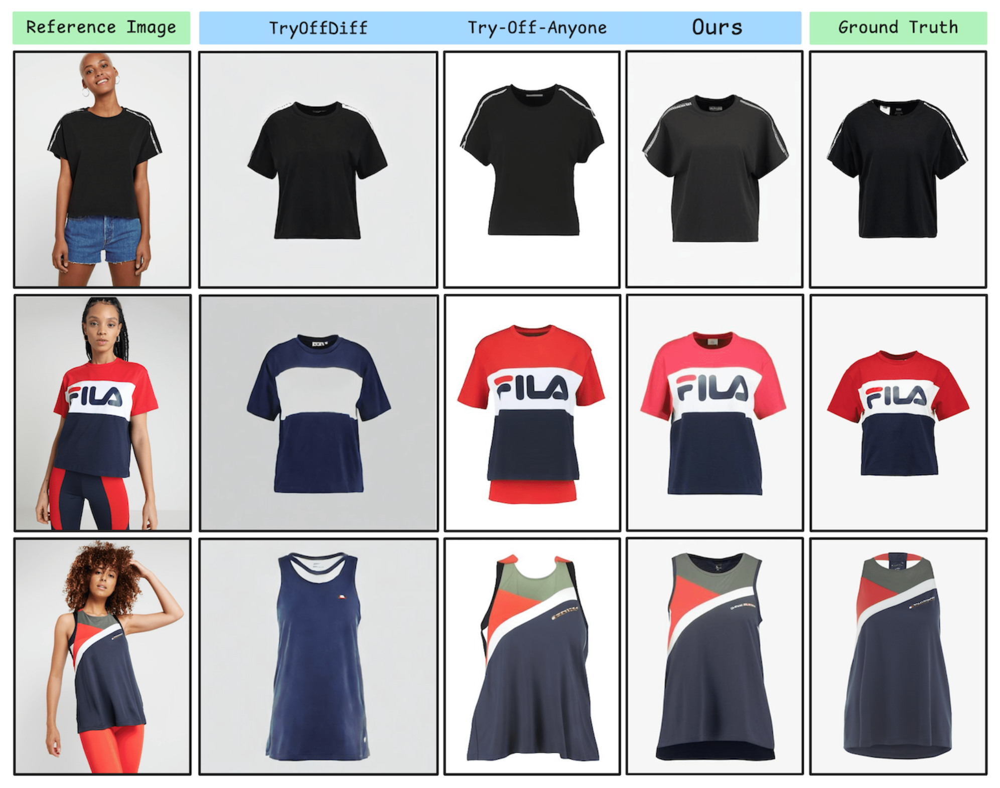
Studio-condition Testing Samples, which the model was trained with.
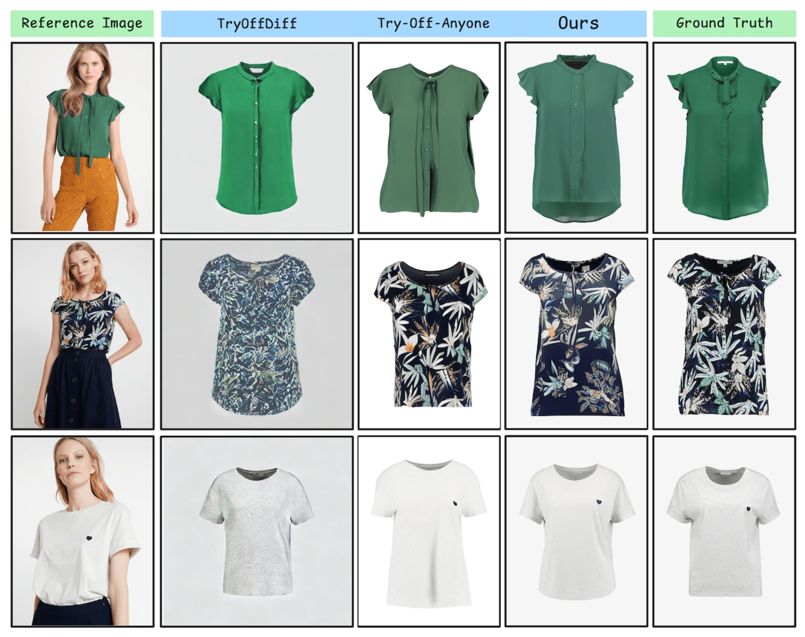
Studio-condition Testing Samples, which the model was trained with.
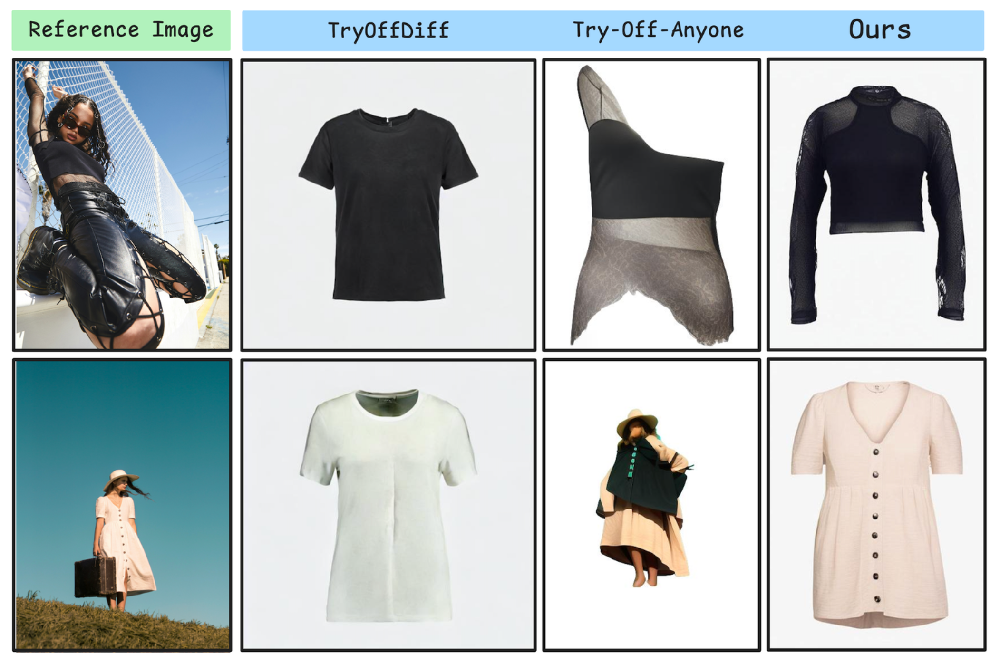
Unsplash Real-World Samples: Zero-shot generalization in-the-wild (No Ground Truth canonical flat garment exists).
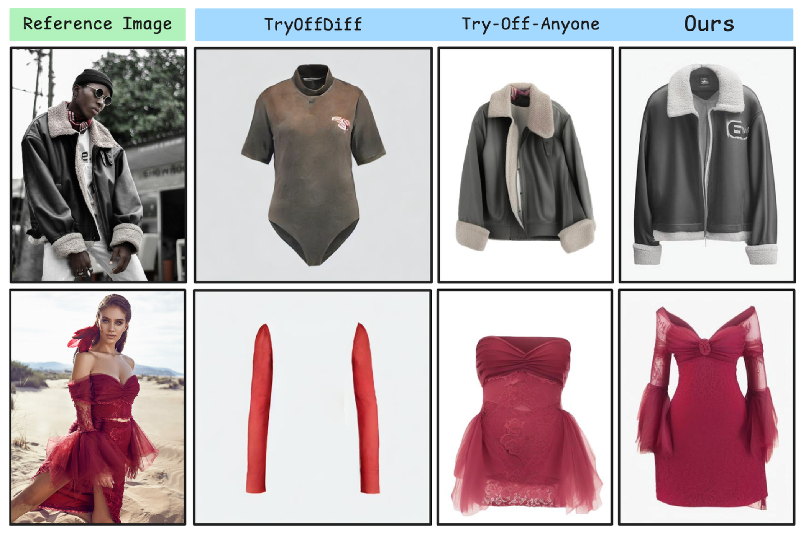
Unsplash Real-World Samples: Zero-shot generalization in-the-wild (No Ground Truth canonical flat garment exists).
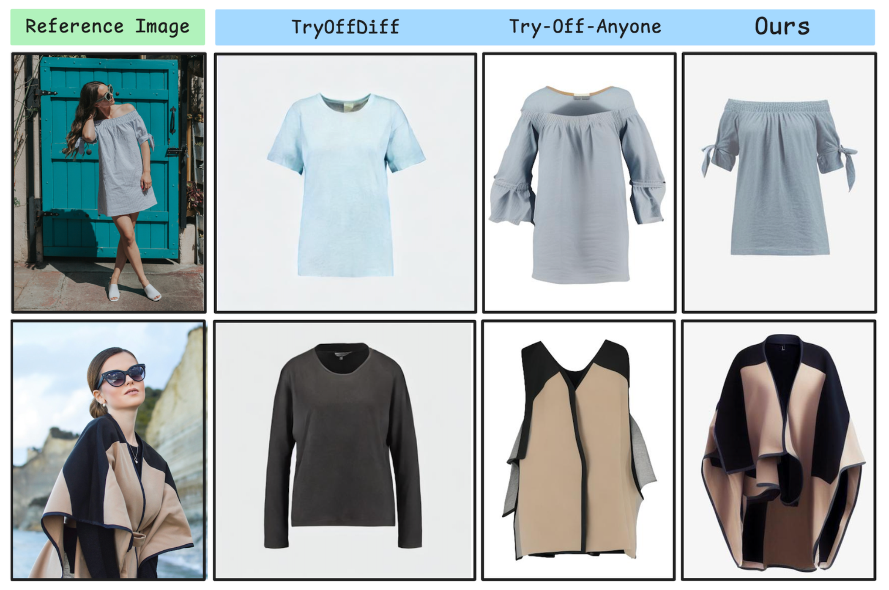
Unsplash Real-World Samples: Zero-shot generalization in-the-wild (No Ground Truth canonical flat garment exists).
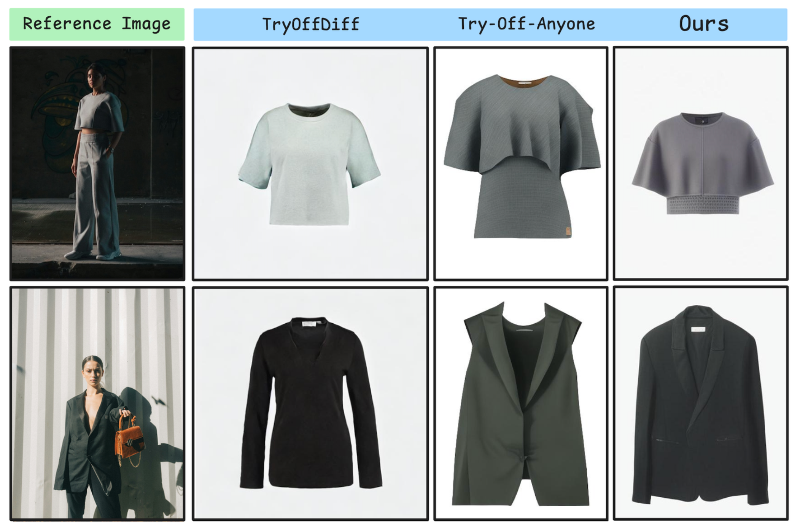
Unsplash Real-World Samples: Zero-shot generalization in-the-wild (No Ground Truth canonical flat garment exists).
More Qualitative Results at 1024x768 resolution
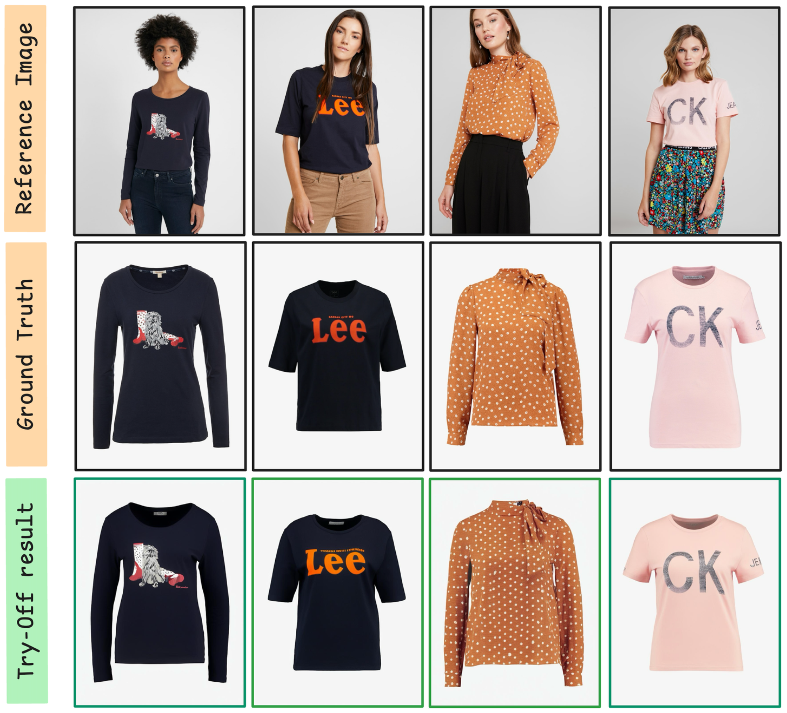
High Resolution Sample 1: Model is progressively trained from low resolution to higher resolution.
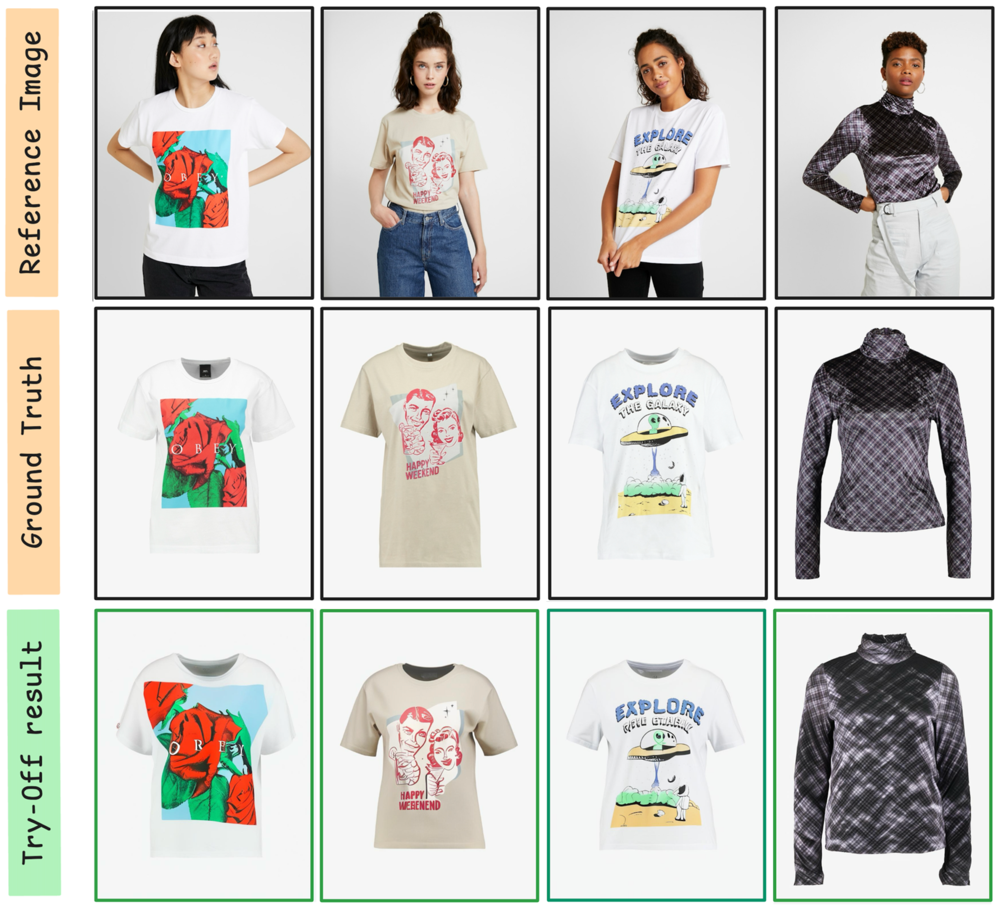
High Resolution Sample 2: Model is progressively trained from low resolution to higher resolution.
BibTeX
@inproceedings{truong2026matters,
title={What Matters in Virtual Try-Off? Dual-UNet Diffusion Model For Garment Reconstruction},
author={Truong, Loc-Phat and Madadi, Meysam and Escalera, Sergio},
year={2026},
eprint={2604.08716},
archivePrefix={arXiv},
primaryClass={cs.CV},
url={https://arxiv.org/abs/2604.08716}
}